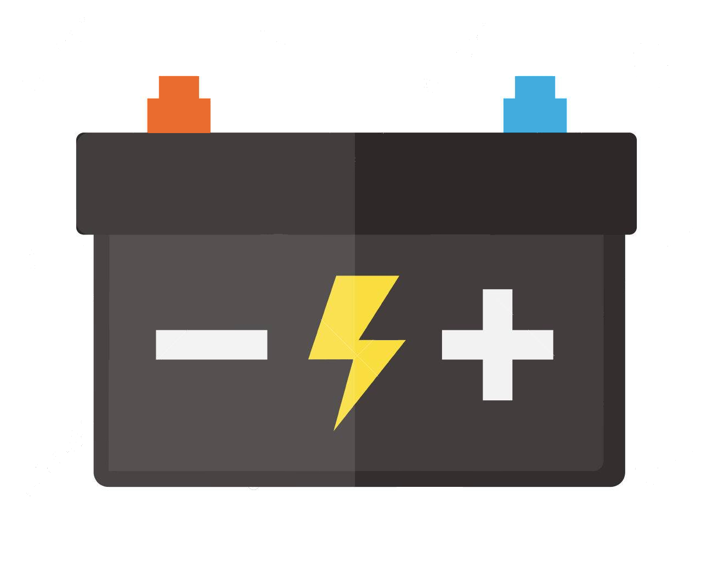
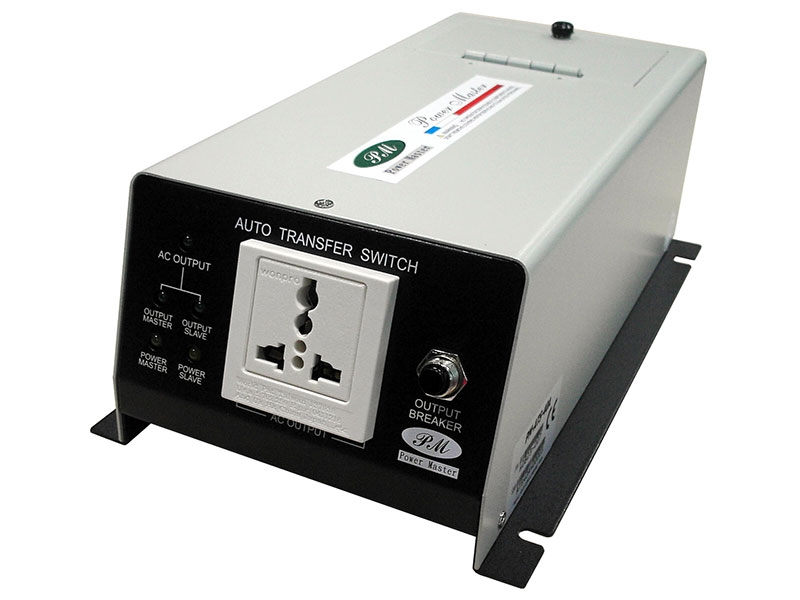
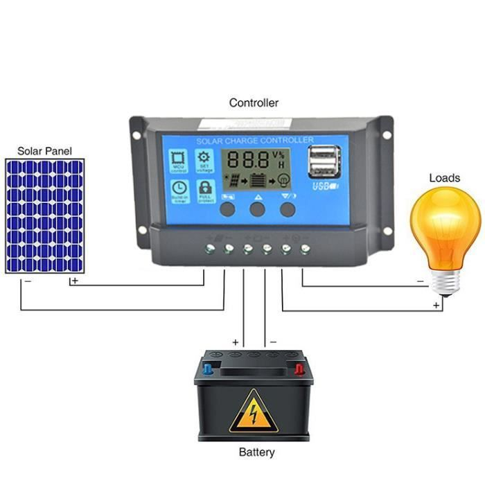
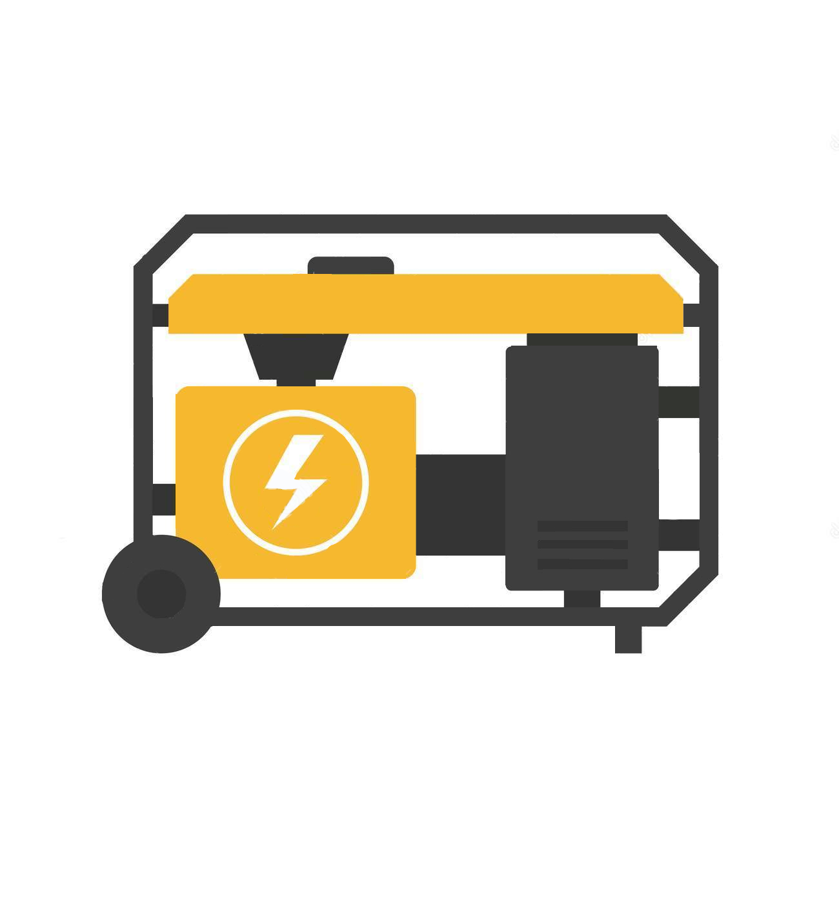

L'installation fonctionne comme un chargeur de batteries.
Durant la journée, les modules photovoltaïques alimentent vos appareils électriques
et stockent l’énergie dans des batteries pour la restituer la nuit ou les jours de temps couvert.
La capacité des batteries (c'est le réservoir d'énergie du domicile, tout comme un réservoir d'eau)
est généralement dimensionnée pour une autonomie de plusieurs jours (3 à 5 jours),
de façon à passer quelques jours de ciel très couvert, sans encombres.

L'emploi d'onduleurs permettant de transformer le courant continu des batteries en 230 volt 50hz se généralise.
Ceci permet d'utiliser des appareils classiques du commerce
(réfrigérateur, congélateur, télévision, micro onde ,
lave linge etc...) moins onéreux que des appareils spécifiques fonctionnant uniquement en 12, 24, ou 48 Volt DC
(courant continu).
Ce procédé permet également de pouvoir alimenter ces appareils avec un groupe électrogène de secours si nécessaire,
sans qu'il y ait besoin d'avoir 2 circuits électriques distincts, d'adaptateurs ou transformateurs.

Les batteries sont protégées par un "régulateur de charge", qui gère leur charge et décharge.
Il limite la charge quand la batterie atteint sa capacité maximale,
et déconnecte l'utilisation lorsque les batteries sont déchargées.
 Les modules photovoltaïques peuvent être associé à d'autre source de charge
(éolienne, groupe électrogène + chargeur, hydro turbine, ...)
Les modules photovoltaïques peuvent être associé à d'autre source de charge
(éolienne, groupe électrogène + chargeur, hydro turbine, ...)
pour charger un même parc de batteries.
On dit alors que l'installation est hybride.
On peut également substituer une source à l'autre.
Par exemple, vous décidez de démarrer votre groupe électrogène pour bricoler, souder, ou autre...
Le groupe via un inverseur de source automatique alimente la maison en lieu et place de l'onduleur
et peut même recharger les batteries si un chargeur est installé.
 Il y a également la possibilité de démarrer un groupe électrogène automatiquement lorsque le régulateur de charge détecte que vos batteries "sont dans le rouge".
Les modules photovoltaiques (1) produisent de l'électricité quand il sont exposés au rayonnement solaire.
Ils doivent être orientés vers le nord avec un angle de 15 à 30°.
Le régulateur de charge (2) régule la charge des batteries et les prévient de décharges trop importantes,
néfastes à leur durée de vie.
Les batteries (3) sont la réserve d’énergie de l'installation et doivent être dimensionnées
selon vos besoins énergétiques
et pour assurer une autonomie de 3 à 5 jours en cas de mauvais temps.
Les constructeurs définissent le nombre de cycles charge/décharge que supporteront les batteries
et donc leur durée de vie.
En pratique il faut éviter de les décharger profondément régulièrement.
Leur durée de vie en dépend.
L'onduleur (4) transforme le courant des batteries en 230VAC 50HZ.
Sa sortie est raccordée sur le tableau électrique de la maison.
Suivant
Précédent